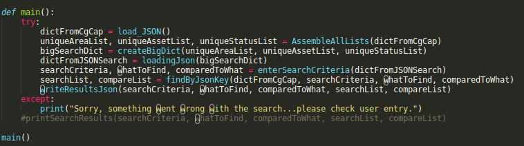

Home
homeJava
autorenewGitHub
autorenewThis is a simple game script from my beginnings with Python over last summer. It was a concentrated effort in not sucking at program logic, and crafting a command prompt text game (as simple as it may be...) I really wanted to demonstrate some logic and some method encapsulation. But looking at the code again, I can see it is really just two methods.... play_game() and main(). Let's take a look at the beginning.
I create three variable in the main method, an int game_counter = 0, a bool start_game = True, and a text file variable called dat_file. The variables game_counter will track the number of games played by the user, start_game will act as the control for ending the game, dat_file will record the game records between the user and the program.
At the top of the file I define the method play_game. This method takes in the game_counter, start_game, and dat_file arguments created in the main method. User input is gathered by the input() method, and I use the standard library "random" module to simulate the program selecting a choice between strings of "rock", "paper", or "scissors". If the user enters "quit", the program exits and closes the data file. If the user types "rock", "paper", or "scissors", we enter the else chain.
Here begins a chain of successive if/else statements. First, three variables a, b, c store strings with different read outs, "You Win!, Computer Wins!, or Tie game...". These hard-coded strings allowed me to write to file easier through the if/else chains. A string comparison drives the chain, so we compare the variable comp_select (generated by the random.choice() method to the user_select string entry. If the user and "computer" pick the same choice, readout will concatenate "Game", the game count (set by game_counter), and a hardcoded string for "win, lose, or tie". With readout storing one concatenated string, it then gets dumped into the dat_file text file. This same process occurs when the computer and user choice are different. The elif chain has nested if/else statements that will write different results to dat_file depending on the result of rock, paper, scissors. Finally, the script will return a message about invalid user entry if the user types anythying other than rock, paper, or scissors into the console. ISN'T COMPUTER GAMING GLORIOUS?!?
I must submit to the will of the programming gods. It is a life long learning journey, especially for someone who has only picked up their technical studies within the last year. What I mean is that I am constantly learning. The process of making this game over a few nights last summer (yes a few nights...) was envigorating. First, I am proud because I accomplished this script without consulting google. Second, I am proud because I was able to make this script executable from anywhere in my PC from the command prompt. This consists of moving an executable file to the pathway /usr/local/bin, which is the Linux directory for non-system, locally produced scripts. We grant the file priveleges with the shell command chmod +x file.py, and can move it to our /bin/ directory via the sudo mv file.py shell command. Now the script can be called to run at anytime from any directory.
I would like to find a cleaner way to make the string comparisons between comp_select and user_select. It does not seem "pythonic" to chain so many if/else statements, but it is the path set forth. Eventually I would like to put this game into some type of GUI format. I think it would be valuable to show some UI skills, but then again, I am building programming skills. Please stay tuned for more projects!
arrow_upwardBack to topThis project came from a Python II study of the JSON module. The module study was born out of a broad exploration of how files work in Python. I am happy to say that the script is fully methodized (modularized?) and looks pretty clean. I am still learning about the proper way to break a script into methods. Let's first look at main()
First I call on the load_JSON() method which will open a JSON file, convert the file data to a dictionary object, and return the object to a variable in main() named dictFromCgCap. The particular JSON file that we are using was obtained from WPRDC and contains property data collected from the Pittsburgh PA region. This is the essential piece of the program. Python allows us to convert the JSON file to a dictionary object that we can iterate through and parse the data. With a dictionary object to pass around, it is then sent to the AssembleAllLists() method. If the dictionary object is the essential piece (or key if we are being meta) to the script, the AssembleAllLists() method is the work-horse. This method takes in the dictionary object as an argument. First it generates three list objects that will be passed into other script methods via diciontary iteriation by the key 'features'. This key comes directly from the converted JSON file. Nested in the 'features' key is an additional dictionary accessed by the key 'properties which contains the data we want. This is a neat way to dig into diciontaries that are nested within other dictionaries.
arrow_upwardBack to top